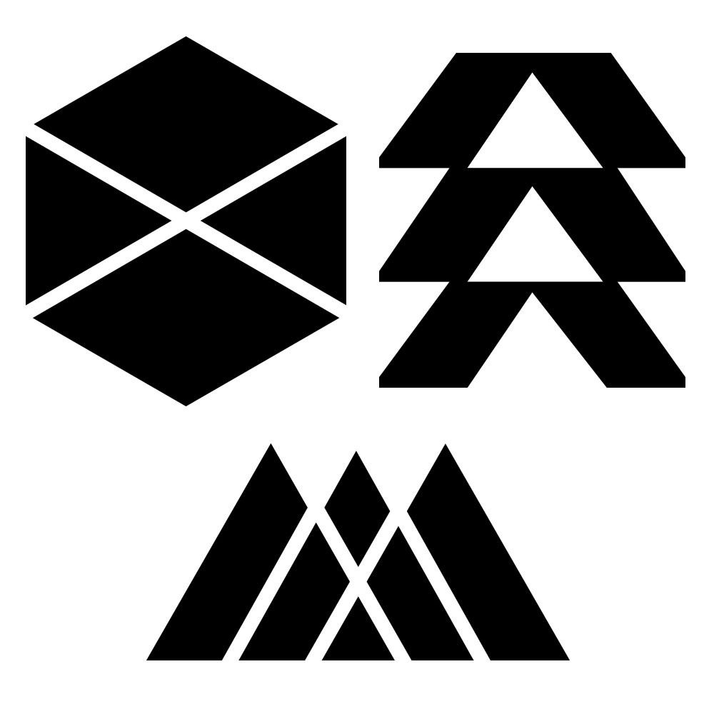

Destiny 2 is a Action MMO created by Bungie. The game is centered
around a battle between the darkness and light. however that line may
be thinner than you think. you go to multiple planets fighting difffrent
species and protect the lat city fo humanity from the darkness.

There are 3 major classes in Destiny 2, The Hunter, Titan, and warlock. These are known as guardians the last power granted to humanity
by the traveler. The hunter is the quick, nimble and more of a damage class.
The titan is the bulky, healthy and tankyt calsss who deals some good
damage but can take more and has abilitys to help him with dealing with enimes.
The warlock is the character that is more focused around burst damage and supporting themselves and teamates.